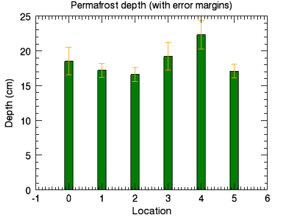

Use error plots singly or in conjunction with other plots to show error values. The example below illustrates how to use an error plot with a bar plot to show a comparison of data as well as the error values.

The code shown below creates the graphic shown above. You can copy the entire block and paste it into the IDL command line to run it.
; Define the data
loc = INDGEN(6)
depth = [18.5, 17.2, 16.6, 19.2, 22.3, 17.1]
depth_error = [2.0, 1.0, 1.0, 2.0, 2.0, 1.0]
; Create the barplot
bplot = BARPLOT(depth, FILL_COLOR='green', $
YRANGE=[0,25], WIDTH = 0.25)
; Create the error plot on top
eplot = ERRORPLOT(depth, depth_error, $
LINESTYLE = 6, $
ERRORBAR_COLOR = 'orange', $
ERRORBAR_CAPSIZE = 0.25, $
XTITLE='Location', YTITLE='Depth (cm)', $
TITLE='Permafrost depth (with error margins)', $
/OVERPLOT)
| • | FILL_COLOR - defines the color to use for the bar plot bar. |
| • | [X,Y,Z]RANGE - defines the range of values for the axis. |
| • | WIDTH - defines the width of the bars in values from 0 to 1. |
| • | |
| • | |
| • | ERRORBAR_CAPSIZE - specifies the size of the cap or the error bar in values from 0 to 1. |
| • | [X,Y,Z]TITLE - defines the title for the axis. |
| • | TITLE - defines the title for the window. |
| • | |
| • | Change Graphics Properties |
| • | Multiple Graphics in One Window |
| • | Saving Graphics |
| • | Bar Plots |
| • | ERRORPLOT |
| • | PLOT |
| • | Graphics |
| • | Formatting IDL Graphics Symbols and Lines |